Projektseminar
Datenaufbereitung II
Julius Klingelhoefer
2022-11-15
Aufgabe der letzten Woche
Fragen zur R-Übung der letzten Sitzung?
Erhebungs-Updates
Aktueller Stand der Erhebung
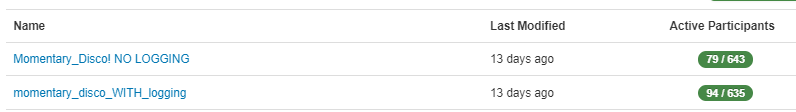
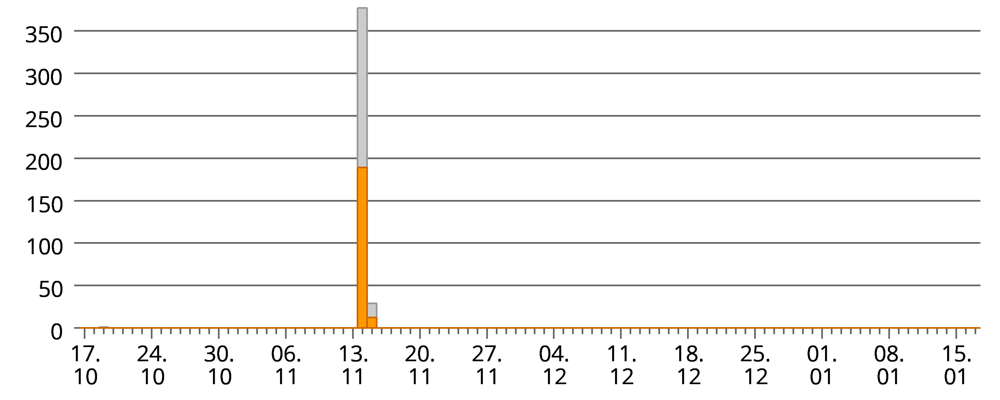
Kursanforderungen
- Aktive Rekrutierung von Studienteilnehmer*innen
Wozu laden Sie ein?
Befragungs-Studie der FAU Erlangen-Nürnberg (FB WiSo)
Sie haben die Studie im Rahmen Ihres Studiums in einem Kurs unter Betreuung von Julius Klingelhöfer entwickelt
Die Befragung untersucht Wohlbefinden und (nicht-)Nutzung digitaler/sozialer Medien im Alltag
Ziel der Studie ist, die Zusammenhänge zwischen selbstgesteuerter Mediennutzung und Wohlbefinden besser zu verstehen, um daraus Empfehlungen abzuleiten
Die Studie besteht aus zwei Teilen:
Vorbefragung (ca. 15 Min.)
5 Kurzfragebögen pro Tag, je max. 1 Minute lang für 14 Tage (insg. max. 70 Minuten), zugestellt per Studien-App
Alle Studienabschnitte sind vollständig anonym
Alle Daten werden konform zur DSGVO, also nach höchsten deutschen/europäischen
Datenschutzstandards, anonym erhoben und dienen nur der Forschung (keine kommerzielle Verwendung)
Zielgruppe
18-35 Jahre alt
Idealerweise (halbwegs) geregelte Arbeitszeiten (Ausfüllen könnte schwierig für Schichtarbeiter*innen, o.Ä. sein) - aber kein Ausschlusskriterium
Besitzen ein Android-Smartphone
Idealerweise Bereit zur Teilnahme an der gesamten Studie (Vor-, ESM- & Nachbefragung)
- Gesamtaufwand max. 90 Minuten (realistischerweise wahrscheinlich eher 60 min.)
Wichtigste Teilnahmeanreize
Interesse am Thema wecken ➡️ intrinsische Motivation
Persönliche Beziehung zum/r Teilnehmer*in; persönlicher Gefallen/Unterstützung des Studiums
Beitrag zur Forschung: besseres Verständnis von Detox, Wohlbefinden, & Mediennutzung
Implikationen für die Praxis
Monetäre Incentives
Als Gutschein für beliebige Online-Shops (über Wunschgutschein.de)
15€ p.P. bei vollständiger Teilnahme
Verlosung von 100€ + 2*50€ Gutscheinen
Nicht-monetäre Incentives (bei Interesse)
Individuelles Feedback, grafisch aufbereitet (per Shiny-App)
Zusammenfassung der Studienergebnisse &/| Tipps rund um selbstregulierte Mediennutzung
Dos and Dont’s bei der Rekrutierung
Dos
Divers rekrutieren
Gezielte, persönliche Ansprache
Zentrale Teilnahmevoraussetzungen im Gespräch prüfen
Teilnahmeanreize nennen ➡️ Persuasion, aber keine Nötigung
Zusenden/Teilen des Fragebogens über Link (+Flyer)
Don’ts
Teilnahmevoraussetzungen ignorieren ➡️ macht allen Beteiligten Arbeit, bringt letztlich aber nichts
konkrete Forschungsfragen oder Hypothesen nennen ➡️ gefährdet Validität der Daten
Personen einladen, bei denen die Teilnahmechance sehr gering ist ➡️ Nachrekrutierungsaufwand
Wie Rekrutieren?
SoSci-Panel ✅
WiSo-Verteiler 🔜
Flyer drucken 🔜 (+ verteilen)
Persönliches Umfeld (FtF, Messenger, E-Mail, …)
Soziale Netzwerke (Instagram, Facebook, …)
Gruppen in sozialen Netzwerken (z. B. lokale Kleinanzeigen Facebook-Gruppen, …)
Umfragenetzwerke, z. B. Surveycircle
…
Sharepic

Gruppenarbeit
Weitere Ideen?
Gruppenarbeit: Brainstorming: Ideen für die Rekrutierung
Welche Arten der Rekrutierung können Sie sich zusätzlich vorstellen?
Ordnen Sie die Rekrutierungsmöglichkeiten nach der angenommenen Effektivität (Sie können dafür Teams nutzen)
Zeit: 15 min.
Input: Datenaufbereitung II
Ziel der Sitzungen
- Darstellung der grundlegenden Schritte der Datenaufbereitung (im Kontext eines Forschungsprojektes)
- Hinweis auf spezifische Heraus- bzw. Anforderungen von ESM-Datensätzen
- Vermittlung der notwendigen RFunktionen zur selbstständigen Bearbeitung der Daten

Inhalte heute
Letzte Woche: Fokus auf den “ersten Schritt”, d.h. auf
importieren
zusammenfügen
oberflächlich kontrollieren
Heute: “zweiter Schritt”:
Variablen über- & bearbeiten z. B.:
recodieren oder
neu erstellen (z. B. berechnen)

Grundlagen der Variablenüberarbeitung in R
Reise durch das tidyverse & angrenzende Galaxien (sjmisc)
🦠 mutate() ⚔️ across() 🗃️ group_by() ✨ rec() 1️⃣ dicho()
Bearbeitung von Fällen
Fälle auswählen
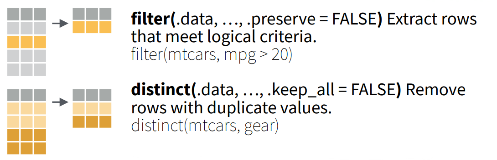Quelle: Posit Software (2021)
Bearbeitung von Fällen
Fälle sortieren
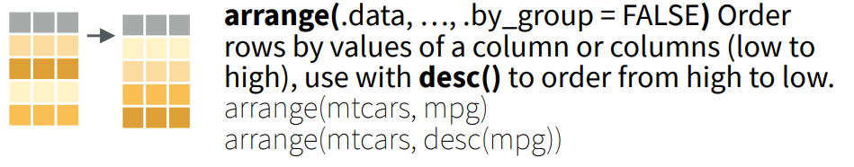Quelle: Posit Software (2021)
Bearbeitung von Variablen
Variablen auswählen und sortieren
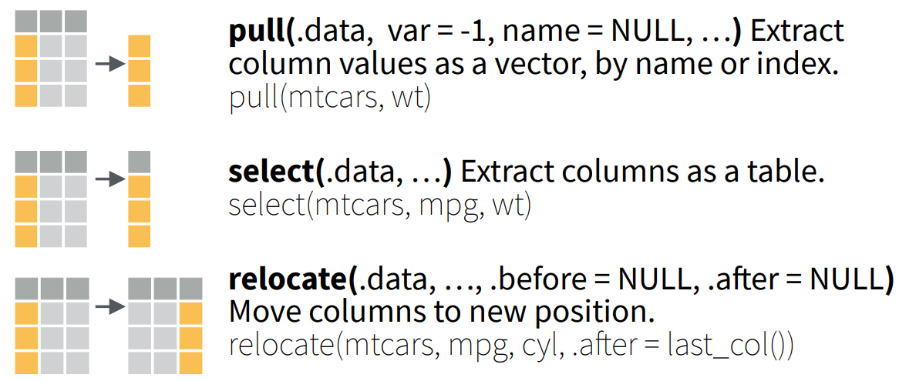Quelle: Posit Software (2021)
Beispiel: Filterung nach Datentyp
Beispiel: Drop der Variable version
Basisdaten
[1] "id" "version"
[3] "participant" "trigger"
[5] "trigger_date" "trigger_time"
[7] "trigger_counter" "form"
[9] "form_start_date" "form_start_time"
[11] "form_finish_date" "form_finish_time"
[13] "form_upload_date" "form_upload_time"
[15] "missing" "wb_ge"
[17] "wb_energy" "wb_stress"
[19] "wb_connect" "procra"
[21] "screentime_work" "screentime_leisure"
[23] "disco_1" "disco_2"
[25] "disco_3" "disco_4"
[27] "disco_5" "no_disco"
[29] "disco_sd" "motivation_distraction"
[31] "motivation_wellbeing" "motivation_social"
[33] "goal_conf_disconnection" "ns_autonomy"
[35] "ns_competence" "ns_relatedness"
[37] "disco_desire" "media_category_1"
[39] "media_category_2" "media_category_3"
[41] "media_category_4" "media_category_5"
[43] "media_category_6" "media_category_7"
[45] "missed_alarm" "missed_time"
[47] "disco_1_daily_alarm_1" "disco_1_daily_alarm_2"
[49] "disco_1_daily_alarm_3" "disco_1_daily_alarm_4"
[51] "disco_1_daily_alarm_5" "disco_1_daily_alarm_6"
[53] "disco_1_daily_time_1" "disco_1_daily_time_2"
[55] "disco_1_daily_time_3" "disco_1_daily_time_4"
[57] "disco_1_daily_time_5" "disco_1_daily_time_6"
[59] "motivation_distraction_day" "motivation_wellbeing_day"
[61] "motivation_social_day" "conscientiousness"
[63] "disco_thoughts_x" "final_feedback"
[65] "participation_n" "feedback"
[67] "feedback_pin" "day_n"
[69] "daily_forms" "participation_number"
[71] "final_day" "finished"
[73] "end_of_day_fillout" "movi_id_nl"
[75] "movi_id_yl" "case"
[77] "serial" "ref"
[79] "questnnr" "mode"
[81] "started" "availability_preference_01"
[83] "availability_preference_02" "availability_preference_03"
[85] "availability_preference_04" "disco_tech_w_1"
[87] "disco_tech_w_2" "disco_tech_w_3"
[89] "disco_tech_w_4" "disco_tech_w_5"
[91] "disco_tech_w_6" "disco_level_w_1"
[93] "disco_level_w_2" "disco_level_w_3"
[95] "disco_level_w_4" "disco_level_w_5"
[97] "disco_level_w_6" "disco_thoughts_y"
[99] "disco_context_1" "disco_context_2"
[101] "disco_context_3" "disco_context_4"
[103] "disco_context_5" "disco_context_6"
[105] "disco_context_7" "disco_context_8"
[107] "disco_context_9" "disco_context_10"
[109] "disco_context_11" "disco_context_other"
[111] "ending_selection_text" "fi03"
[113] "fi04_01" "fomo_01"
[115] "fomo_02" "fomo_03"
[117] "fomo_04" "fomo_05"
[119] "fomo_06" "fomo_07"
[121] "fomo_08" "fomo_09"
[123] "fomo_10" "consent"
[125] "ic03_04" "ic03_03"
[127] "ic03_01" "ic03_02"
[129] "android" "consent_part_2"
[131] "md_work_seconds" "md_private_seconds"
[133] "mindfulness_01" "mindfulness_02"
[135] "mindfulness_03" "mindfulness_04"
[137] "mindfulness_05" "pdo_01"
[139] "pdo_02" "pdo_03"
[141] "rsd_01" "rsd_02"
[143] "rsd_03" "rsd_04"
[145] "rsd_05" "rsd_06"
[147] "sc_res_1" "sc_res_3"
[149] "sc_imp_1" "sc_res_4"
[151] "sc_res_2" "sc_imp_2"
[153] "sc_imp_3" "sc_imp_4"
[155] "sd_gender" "age"
[157] "work_hours" "sd_edu"
[159] "sd_living_arrangement" "sd_living_own_kids"
[161] "sd_household_size" "sd_occupation"
[163] "te01_01" "te01_02"
[165] "te01_03" "te01_04"
[167] "ur01_cp" "ur01"
[169] "ur02_cp" "ur02"
[171] "ur04_fm_f" "ur08"
[173] "ur08_01" "swl_01"
[175] "swl_02" "swl_03"
[177] "swl_04" "swl_05"
[179] "pa_01" "pa_02"
[181] "pa_03" "pa_04"
[183] "pa_05" "na_01"
[185] "na_02" "na_03"
[187] "na_04" "na_05"
[189] "positive_arousal" "negative_arousal"
[191] "connectedness" "wb03"
[193] "procra_01" "procra_02"
[195] "procra_03" "procra_04"
[197] "procra_05" "time001"
[199] "time002" "time003"
[201] "time004" "time005"
[203] "time006" "time007"
[205] "time008" "time009"
[207] "time010" "time011"
[209] "time012" "time013"
[211] "time014" "time015"
[213] "time016" "time017"
[215] "time018" "time019"
[217] "time020" "time021"
[219] "time022" "time_sum"
[221] "mailsent" "lastdata"
[223] "finished_2" "q_viewer"
[225] "lastpage" "maxpage"
[227] "missing_2" "missrel"
[229] "time_rsi" "deg_time" Anwendung von select()
[1] "id" "participant"
[3] "trigger" "trigger_date"
[5] "trigger_time" "trigger_counter"
[7] "form" "form_start_date"
[9] "form_start_time" "form_finish_date"
[11] "form_finish_time" "form_upload_date"
[13] "form_upload_time" "missing"
[15] "wb_ge" "wb_energy"
[17] "wb_stress" "wb_connect"
[19] "procra" "screentime_work"
[21] "screentime_leisure" "disco_1"
[23] "disco_2" "disco_3"
[25] "disco_4" "disco_5"
[27] "no_disco" "disco_sd"
[29] "motivation_distraction" "motivation_wellbeing"
[31] "motivation_social" "goal_conf_disconnection"
[33] "ns_autonomy" "ns_competence"
[35] "ns_relatedness" "disco_desire"
[37] "media_category_1" "media_category_2"
[39] "media_category_3" "media_category_4"
[41] "media_category_5" "media_category_6"
[43] "media_category_7" "missed_alarm"
[45] "missed_time" "disco_1_daily_alarm_1"
[47] "disco_1_daily_alarm_2" "disco_1_daily_alarm_3"
[49] "disco_1_daily_alarm_4" "disco_1_daily_alarm_5"
[51] "disco_1_daily_alarm_6" "disco_1_daily_time_1"
[53] "disco_1_daily_time_2" "disco_1_daily_time_3"
[55] "disco_1_daily_time_4" "disco_1_daily_time_5"
[57] "disco_1_daily_time_6" "motivation_distraction_day"
[59] "motivation_wellbeing_day" "motivation_social_day"
[61] "conscientiousness" "disco_thoughts_x"
[63] "final_feedback" "participation_n"
[65] "feedback" "feedback_pin"
[67] "day_n" "daily_forms"
[69] "participation_number" "final_day"
[71] "finished" "end_of_day_fillout"
[73] "movi_id_nl" "movi_id_yl"
[75] "case" "serial"
[77] "ref" "questnnr"
[79] "mode" "started"
[81] "availability_preference_01" "availability_preference_02"
[83] "availability_preference_03" "availability_preference_04"
[85] "disco_tech_w_1" "disco_tech_w_2"
[87] "disco_tech_w_3" "disco_tech_w_4"
[89] "disco_tech_w_5" "disco_tech_w_6"
[91] "disco_level_w_1" "disco_level_w_2"
[93] "disco_level_w_3" "disco_level_w_4"
[95] "disco_level_w_5" "disco_level_w_6"
[97] "disco_thoughts_y" "disco_context_1"
[99] "disco_context_2" "disco_context_3"
[101] "disco_context_4" "disco_context_5"
[103] "disco_context_6" "disco_context_7"
[105] "disco_context_8" "disco_context_9"
[107] "disco_context_10" "disco_context_11"
[109] "disco_context_other" "ending_selection_text"
[111] "fi03" "fi04_01"
[113] "fomo_01" "fomo_02"
[115] "fomo_03" "fomo_04"
[117] "fomo_05" "fomo_06"
[119] "fomo_07" "fomo_08"
[121] "fomo_09" "fomo_10"
[123] "consent" "ic03_04"
[125] "ic03_03" "ic03_01"
[127] "ic03_02" "android"
[129] "consent_part_2" "md_work_seconds"
[131] "md_private_seconds" "mindfulness_01"
[133] "mindfulness_02" "mindfulness_03"
[135] "mindfulness_04" "mindfulness_05"
[137] "pdo_01" "pdo_02"
[139] "pdo_03" "rsd_01"
[141] "rsd_02" "rsd_03"
[143] "rsd_04" "rsd_05"
[145] "rsd_06" "sc_res_1"
[147] "sc_res_3" "sc_imp_1"
[149] "sc_res_4" "sc_res_2"
[151] "sc_imp_2" "sc_imp_3"
[153] "sc_imp_4" "sd_gender"
[155] "age" "work_hours"
[157] "sd_edu" "sd_living_arrangement"
[159] "sd_living_own_kids" "sd_household_size"
[161] "sd_occupation" "te01_01"
[163] "te01_02" "te01_03"
[165] "te01_04" "ur01_cp"
[167] "ur01" "ur02_cp"
[169] "ur02" "ur04_fm_f"
[171] "ur08" "ur08_01"
[173] "swl_01" "swl_02"
[175] "swl_03" "swl_04"
[177] "swl_05" "pa_01"
[179] "pa_02" "pa_03"
[181] "pa_04" "pa_05"
[183] "na_01" "na_02"
[185] "na_03" "na_04"
[187] "na_05" "positive_arousal"
[189] "negative_arousal" "connectedness"
[191] "wb03" "procra_01"
[193] "procra_02" "procra_03"
[195] "procra_04" "procra_05"
[197] "time001" "time002"
[199] "time003" "time004"
[201] "time005" "time006"
[203] "time007" "time008"
[205] "time009" "time010"
[207] "time011" "time012"
[209] "time013" "time014"
[211] "time015" "time016"
[213] "time017" "time018"
[215] "time019" "time020"
[217] "time021" "time022"
[219] "time_sum" "mailsent"
[221] "lastdata" "finished_2"
[223] "q_viewer" "lastpage"
[225] "maxpage" "missing_2"
[227] "missrel" "time_rsi"
[229] "deg_time" Bearbeitung und Erstellung von Variablen
Erstellung neuer Variablen
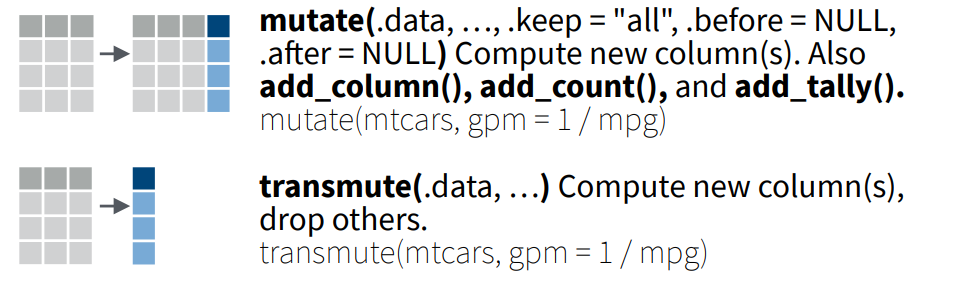Quelle: Posit Software (2021)
Bearbeitung und Erstellung von Variablen
Fälle zusamenfassen
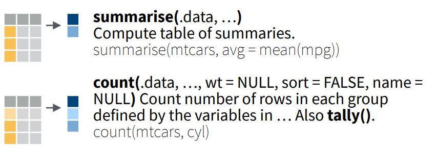Quelle: Posit Software (2021)
Bearbeitung und Erstellung von Variablen
Hilfreiche Selektoren
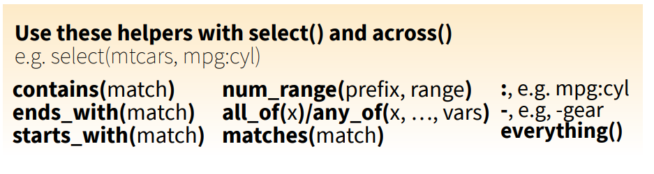Quelle: Posit Software (2021)
Beispiel: Anpassen der ID-Variable
mutate(): Neu oder überarbeiten
Beispiel: Variablenausprägungen “zählen”
Komfortable Lösung: frq()
id <character>
# total N=67 valid N=67 mean=1.67 sd=1.09
Value | N | Raw % | Valid % | Cum. %
--------------------------------------
nl_128 | 46 | 68.66 | 68.66 | 68.66
yl_533 | 5 | 7.46 | 7.46 | 76.12
yl_552 | 8 | 11.94 | 11.94 | 88.06
yl_609 | 8 | 11.94 | 11.94 | 100.00
<NA> | 0 | 0.00 | <NA> | <NA>Beispiel: Neue Daten(sätze) “berechnen”
Eigene Auswertung mit summarise()
Beispiel: Mehrere Variablen editieren (simultan)
Überarbeitung einer Variable
ur01
1 128
2 128
3 128
4 128
5 128
6 128
7 128
8 128
9 128
10 128
11 128
12 128
13 128
14 128
15 128
16 128
17 128
18 128
19 128
20 128
21 128
22 128
23 128
24 128
25 128
26 128
27 128
28 128
29 128
30 128
31 128
32 128
33 128
34 128
35 128
36 128
37 128
38 128
39 128
40 128
41 128
42 128
43 128
44 128
45 128
46 128
47 NA
48 NA
49 NA
50 NA
51 NA
52 NA
53 NA
54 NA
55 NA
56 NA
57 NA
58 NA
59 NA
60 NA
61 NA
62 NA
63 NA
64 NA
65 NA
66 NA
67 NAÜberarbeitung mehrerer Variablen
Gruppierung nach Variablen und Fällen
Beispiel: Gruppierung nach Variable
Ungruppierte Auswrtung der NAs
Gruppierte Auswertung der NAs pro Fall
# A tibble: 46 × 4
# Groups: id [4]
id case n_miss pct_miss
<chr> <int> <int> <dbl>
1 nl_128 23 59 25.8
2 nl_128 3 57 24.9
3 nl_128 5 57 24.9
4 nl_128 9 57 24.9
5 nl_128 10 57 24.9
6 nl_128 11 57 24.9
7 nl_128 12 57 24.9
8 nl_128 13 57 24.9
9 nl_128 14 57 24.9
10 nl_128 16 57 24.9
# … with 36 more rowsBeispiel: Gruppierung nach Fällen
Häufig sind fall- bzw. personenspezfische Mittel- oder Summewerte von Interesse
rowwise()ist vergleichsweise “kompliziert”, erlaubt aber im Gegensatz zu anderen Funktionen die direkte Umsetzung von mehreren Arbeitsschritten gleichzeitig (bezogen auf Fälle / Reihen)
z. B. Index für disconnection
data_long %>%
rowwise() %>%
mutate(disco_index = mean(c_across(starts_with("disco_")), na.rm = T)) %>%
frq(disco_index)disco_index <numeric>
# total N=67 valid N=67 mean=2.78 sd=0.30
Value | N | Raw % | Valid % | Cum. %
------------------------------------
2.17 | 1 | 1.49 | 1.49 | 1.49
2.17 | 1 | 1.49 | 1.49 | 2.99
2.22 | 1 | 1.49 | 1.49 | 4.48
2.26 | 1 | 1.49 | 1.49 | 5.97
2.37 | 2 | 2.99 | 2.99 | 8.96
2.46 | 3 | 4.48 | 4.48 | 13.43
2.49 | 1 | 1.49 | 1.49 | 14.93
2.51 | 1 | 1.49 | 1.49 | 16.42
2.55 | 2 | 2.99 | 2.99 | 19.40
2.57 | 1 | 1.49 | 1.49 | 20.90
2.62 | 6 | 8.96 | 8.96 | 29.85
2.66 | 4 | 5.97 | 5.97 | 35.82
2.67 | 1 | 1.49 | 1.49 | 37.31
2.69 | 2 | 2.99 | 2.99 | 40.30
2.73 | 1 | 1.49 | 1.49 | 41.79
2.76 | 2 | 2.99 | 2.99 | 44.78
2.79 | 9 | 13.43 | 13.43 | 58.21
2.83 | 6 | 8.96 | 8.96 | 67.16
2.86 | 6 | 8.96 | 8.96 | 76.12
2.90 | 1 | 1.49 | 1.49 | 77.61
2.93 | 6 | 8.96 | 8.96 | 86.57
3.00 | 2 | 2.99 | 2.99 | 89.55
3.32 | 1 | 1.49 | 1.49 | 91.04
3.33 | 1 | 1.49 | 1.49 | 92.54
3.46 | 1 | 1.49 | 1.49 | 94.03
3.50 | 2 | 2.99 | 2.99 | 97.01
3.54 | 2 | 2.99 | 2.99 | 100.00
<NA> | 0 | 0.00 | <NA> | <NA>Weitere nützliche tidyverse-Befehle
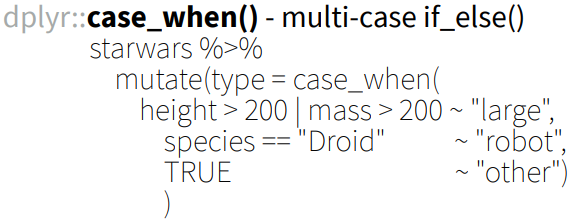
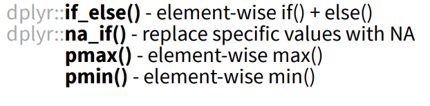
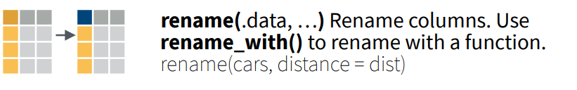
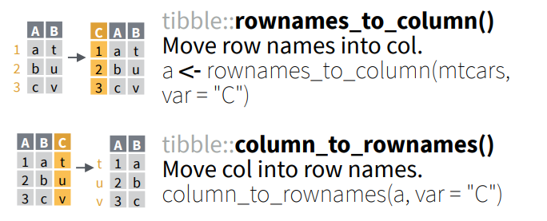
Quelle: Posit Software (2021)
R-Aufgabe
- Nutzen Sie die kennengelernten tidyverse-Funktionen, um
…interessierende Variablen zu erstellen
…die Messungen oder Personen in Gruppen zu unterteilen und zu vergleichen